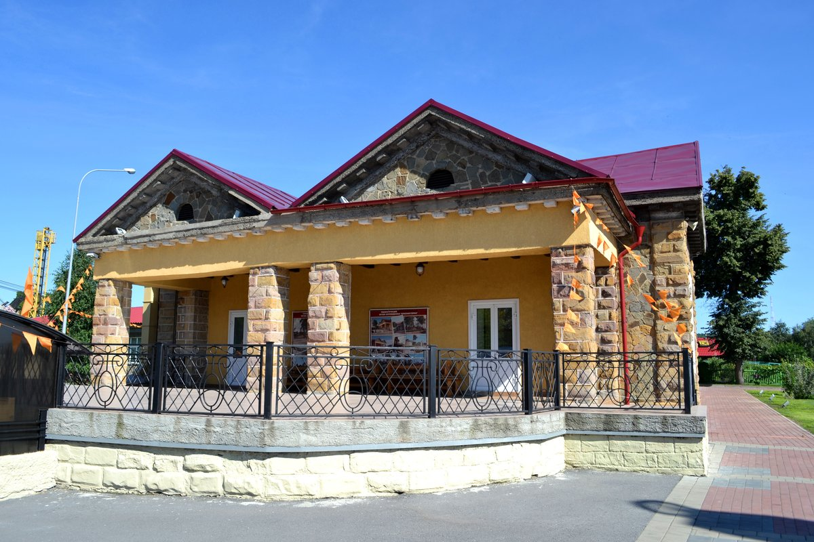

01
Музей-заповедник «Красная Горка» создан на месте Кемеровского рудника. Главное историческое здание — каменный дом управляющего рудником, построенный в 1916 году акционерным обществом «Копикуз».
С высокого скалистого мыса открывается потрясающая круговая панорама всего левобережного Кемерово, реки Томь и мостов. В музее действует настоящая интерактивная учебная штольня, экспозиция горноспасателей и выставка под открытым небом.
Рекомендуем зайти в музейный зал АИК «Кузбасс» и осмотреть смотровую площадку над обрывом Томи.
